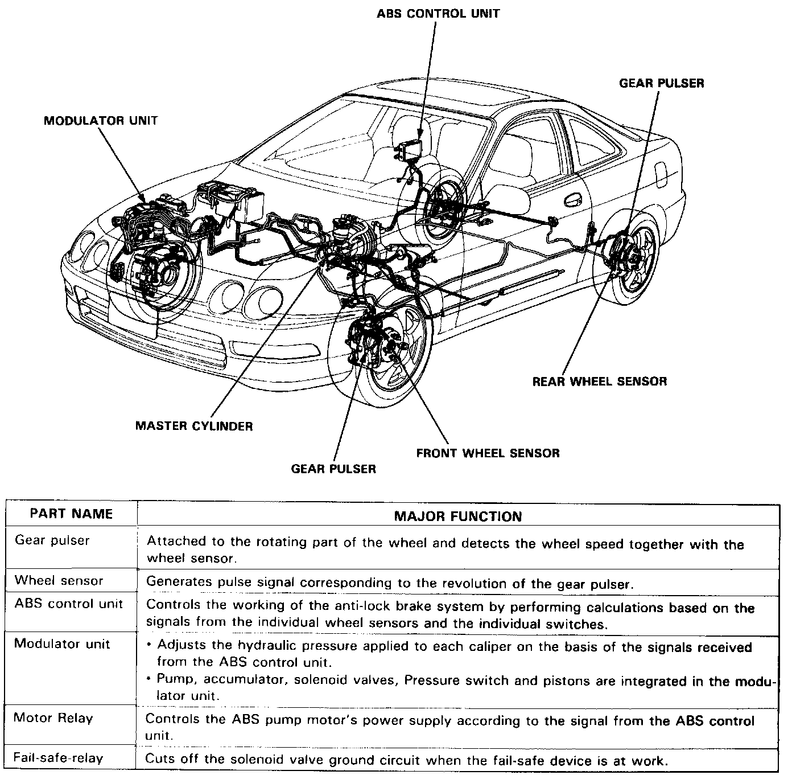

Features and Construction

Features/Construction
In a conventional brake system, if the brake pedal is depressed very hard, the wheels can lock before the vehicle comes to a stop. In such a case, the stability of the vehicle is reduced if the rear wheels are locked, and maneuverability of the vehicle is reduced if the front wheels are locked, creating an extremely unstable condition.
The Anti-lock Brake System (ABS) modulates the pressure of the brake fluid applied to each front caliper or both rear calipers, thereby preventing the locking of the wheels, whenever the wheels are likely to be locked due to hard braking. It then restores normal hydraulic pressure when there is no longer any possibility of wheel locking.
The ABS equipped on this car is compact, with its hydraulic control system incorporated into one modulator unit. It is a 3-channel anti-lock brake system that has individual control of the front wheels and common control ("Select Low") for the rear wheels. "Select Low" means that the rear wheel that would lock first (the one with the lowest resistance to lock-up) determines anti-lock brake system activation for both rear wheels.